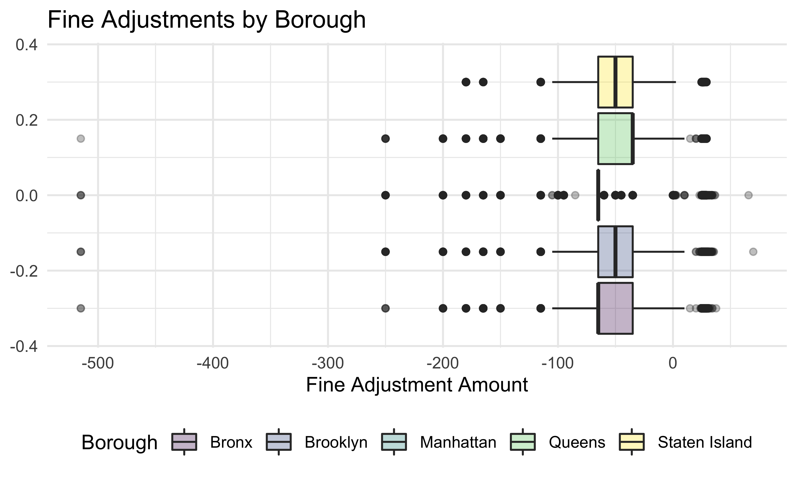

First, let us compute the average fine amounts across the different boroughs:
violation %>%
group_by(borough) %>%
summarise(
<<<<<<< HEAD
avg_fine = mean(fine_amount)
)## # A tibble: 5 x 2
## borough avg_fine
## <chr> <dbl>
## 1 Bronx 76.5
## 2 Brooklyn 74.3
## 3 Manhattan 82.3
## 4 Queens 68.4
## 5 Staten Island 66.9| borough | average_fine |
|---|---|
| Bronx | 76.46053 |
| Brooklyn | 74.34834 |
| Manhattan | 82.25287 |
| Queens | 68.42849 |
| Staten Island | 66.92960 |
We observe that the average fine amount is highest in Manhattan and lowest in Staten Island.
violation %>% group_by(borough) %>%
ggplot(aes(x = fine_amount, fill = borough)) +
geom_boxplot(alpha = 0.3) +
labs(
x = "Fine Amount",
fill = "Borough",
<<<<<<< HEAD
title = "Fine Amount Across Boroughs"
)To see if fine amounts do differ significantly across boroughs, we will conduct a simple one-way ANOVA on these two variables.
violation_reg <- lm(fine_amount~borough, data = violation)
anova(violation_reg)## Analysis of Variance Table
##
## Response: fine_amount
## Df Sum Sq Mean Sq F value Pr(>F)
## borough 4 46651474 11662868 16653 < 2.2e-16 ***
## Residuals 1733700 1214179375 700
## ---
## Signif. codes: 0 '***' 0.001 '**' 0.01 '*' 0.05 '.' 0.1 ' ' 1There appear to be differences between fine amounts and at least 2 boroughs.
Now, we will investigate tendencies in amounts paid in excess of the baseline fine amount.
violation %>%
select(borough, contains("amount")) %>%
mutate(
net_total_amount = fine_amount + penalty_amount + interest_amount - reduction_amount,
excess_amount = penalty_amount + interest_amount - reduction_amount
) %>%
group_by(borough) %>%
summarise(
avg_excess_amount = mean(excess_amount),
avg_net_total_amount = mean(net_total_amount),
avg_total_amount = mean(fine_amount)
<<<<<<< HEAD
)## # A tibble: 5 x 4
## borough avg_excess_amount avg_net_total_amount avg_total_amount
## <chr> <dbl> <dbl> <dbl>
## 1 Bronx -5.13 71.3 76.5
## 2 Brooklyn -5.59 68.8 74.3
## 3 Manhattan -7.30 74.9 82.3
## 4 Queens -6.84 61.6 68.4
## 5 Staten Island -6.89 60.0 66.9| borough | avg_excess_amount | avg_net_total_amount | avg_total_amount |
|---|---|---|---|
| Bronx | -5.127610 | 71.33292 | 76.46053 |
| Brooklyn | -5.593115 | 68.75523 | 74.34834 |
| Manhattan | -7.304869 | 74.94800 | 82.25287 |
| Queens | -6.843527 | 61.58496 | 68.42849 |
| Staten Island | -6.887677 | 60.04193 | 66.92960 |
It seems that parking violation fine adjustments are typically reduced, not increased, if the fine is adjusted.
violation %>%
select(borough, contains("amount")) %>%
mutate(
excess_amount = penalty_amount + interest_amount - reduction_amount
) %>%
filter(excess_amount != 0) %>%
ggplot(aes(x = excess_amount, fill = borough)) +
geom_boxplot(alpha = 0.3) +
labs(
x = "Fine Adjustment Amount",
fill = "Borough",
title = "Fine Adjustments by Borough"
)